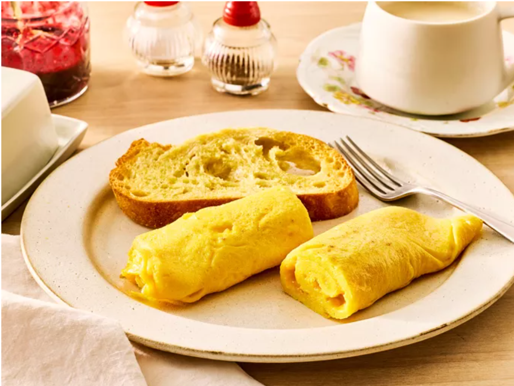

Home
John's Po's Omelette

Description
How to make delicious omlettes in less than 15 minutes.
Just follow this recipe and you too can learn how easy it
it is to make omlettes.
Ingredients
- 3 large fresh eggs
- ½ teaspoon cold water
- ¼ teaspoon kosher salt
- 2 tablespoons unsalted butter, divided
- 1 pinch cayenne or white pepper to taste (Optional)
- Gather ingredients
- Whisk eggs, water, and salt together in a mixing bowl. Whisk until mixture is very liquid and whites are completely blended in, 1 or 2 minutes.
- Heat 1 ½ tablespoons butter in a 9- or 10-inch nonstick skillet over medium-high heat. As soon as butter melts and before it starts to sizzle, pour in whisked eggs. Stir in a circular pattern with a heat-proof spatula, lifting and scrambling eggs, shaking the pan to keep leveling out the mixture, and scraping down the sides. Continue stirring until shaking the pan no longer levels the eggs.
- Reduce heat to low. Using the spatula, smooth the surface to move runny eggs to less runny spots, working toward an even thickness. As soon as the surface is wet but not runny, remove from heat.
- Starting at the handle side of the pan, use the spatula to begin rolling omelette into a cylinder shape, about 3 rolls until omelette is about 2 inches from opposite side of the pan. Use the spatula to fold the last flap of egg over the top of the cylinder leaving the seam-side up. Add remaining 1/2 tablespoon butter to the pan. Gently push the butter as it melts under the omelette.
- Slide omelette to edge of the pan. Flip onto a plate with the seam-side down. Even out the shape, if necessary. You can tuck in the ends, if you like. Brush surface with a bit more butter. Dust with cayenne pepper.
- Enjoy !